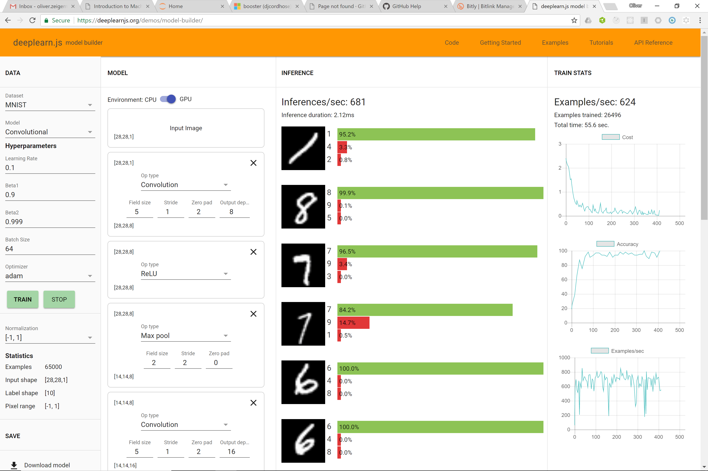

Introduction to Machine Learning for Beginners
Julia Dellnitz / @learnical
Oliver Zeigermann / @DJCordhose
Part 1 - The Basics
How does Machine Learning work?
Customer Data - Car Insurance

How would you rank me (47) for a car with 160 km/h top speed?
How do you create a general prediction?
Classic Approach: Code Rules by hand
if age < 25:
if speed > 180:
return red
else:
return yellow
if age > 75:
return red
if km_per_year > 50:
return red
if km_per_year > 35:
return yellow
return green
No great results
Do we have all the rules? Are they even correct?

approx. 43% correct predictions (guessing would be 33%)
Different Approach: Machine Learning

Exercise #1 - Understanding the Supervised Learning Approach
Manually cluster areas of different customer types
- dark (green): good customer
- light (yellow): mediocre customers
- middle (red): red customers
Make sure you draw with pressure
Plot Twist
Generalisation, not perfect reproduction is the objective
- We split existing data into two sets
- The larger set (60 or 80%) we use to build our model
- The smaller set we use to validate the model
Turn the page: How well did the generalisation work for unknown data?
Machine Learning and AI
Why I like the term artificial intelligence: I think it's good to have an umbrella term for the field that encompasses a range of techniques – ML, knowledge rep, planning, heuristic search, goal formation, behavior modeling, etc. – and it's the one we have.


There are differen types of machine learning

Machine Learning as an Experiment

Supervised Machine Learning
- What we just did
- Train a system using known data
- There are different strategies to train a system
- For our problem a simple strategy will do: KNN
KNN: k Nearest Neighbors

Algorithm
For a case to predict
- Plot the case together with the known samples
- Look at a number (k) of nearest data points
- Choose k in such a way that you can get a majority
- Your prediction is the color of the majority
Exercise #2
- Experiment with the teachable machine to understand supervised learning
- Manually apply KNN to our problem in the lower part of our sample sheet
- Choose a k that looks suitable
- How would k affect the result?
Computed results for k = 1

approx. 98% accuracy on train data, but only 65% on test data
This is what we call Overfitting
Computed results for k = 13

only approx. 81% accuracy on train data, but also 75% on test data
Notice the smooth boundaries
Part 2 - Hipster Stuff
Neural Networks and Deep Learning
Tensorflow Playground
Understanding the Basics of Neural Networks

Exercise #3
- Configure your network to underfit (not being able to separate classes)
- Configure your network to overfit (good on train, but bad on test) - you might have to choose a more complex data set for that
- Configure a minimal network to deliver a good result on the initial data set
How does a Neural Network Learn?
(Stochastic) Gradient Descent (SGD)

http://www.benfrederickson.com/numerical-optimization/
A too high learning rate might miss the mimimum, a too low one might be slow
Applying Deep Neural Networks to our problem

only approx. 79% accuracy on train data, but also 77% on test data
Boundaries even more smooth
Code for Model
Using TensorFlow and Keras
inputs = Input(name='input', shape=(2, ))
x = Dense(100, name='hidden1', activation='relu')(inputs)
x = Dense(100, name='hidden2', activation='relu')(x)
x = Dense(100, name='hidden3', activation='relu')(x)
predictions = Dense(3, name='softmax', activation='softmax')(x)
model = Model(input=inputs, output=predictions)
model.compile(optimizer='adam',
loss='categorical_crossentropy',
metrics=['accuracy'])
model.fit(X_train, y_train_categorical, epochs=1000)
Trains around 90 seconds on fast GPU (might take up to 100 times more on conventional hardware)
Use of GPU

https://twitter.com/chrisalbon/status/907028933693947904?s=03
Not bad, but: Neural Networks are best for non symbolic data
Exploring the different types layers together

How do Convolutions work - Image Kernels
You might know from Photoshop etc., used in Convolutional Neural Networks

http://setosa.io/ev/image-kernels/
There are many more interactive explanations here:
http://setosa.io/ev
Building your own network
Exercise #4
Use the model builder to experiment on the MNIST data set
- Try both Fully Connected Layers as well as Convolutional Layers
- Deliberately change the learning rate to a value that now longer allows a succesful training
- Advanced: try to configure a custom network
Where to go from here?
Try it yourself in an Azure Notebook
Wrapup
- Machine Learning can be a powerful addition to traditional programming
- Objective is to generalize
- Often not even a deep Understanding of the domain is required
- Neural Networks and Deep Learning are especially powerful on the sub symbolic level
Ping us for questions / help / comments: @learnical / @DJCordhose